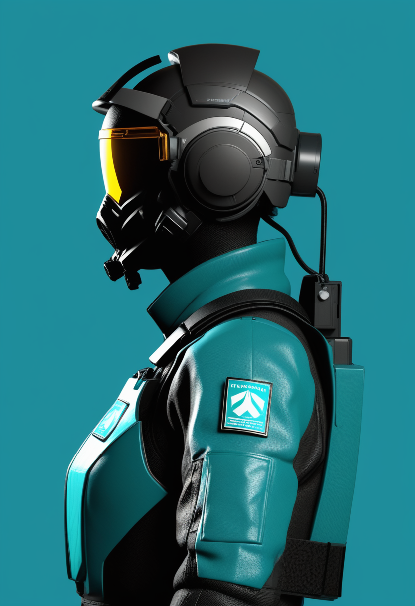
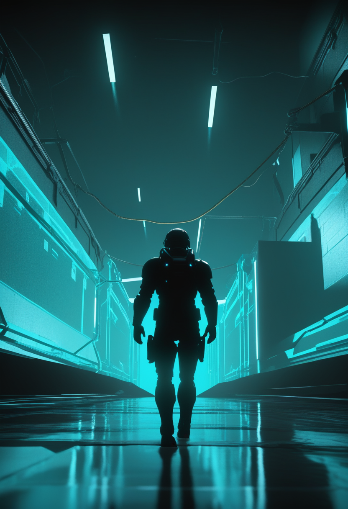
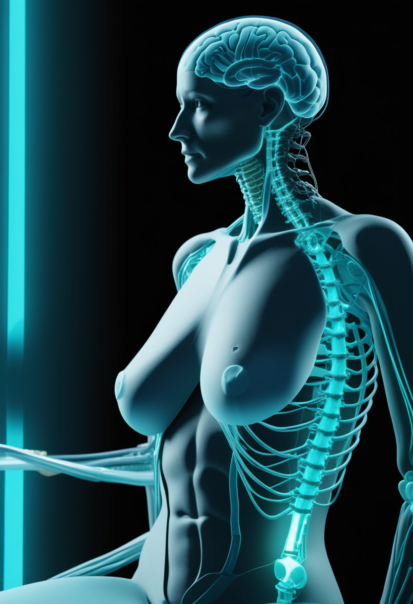
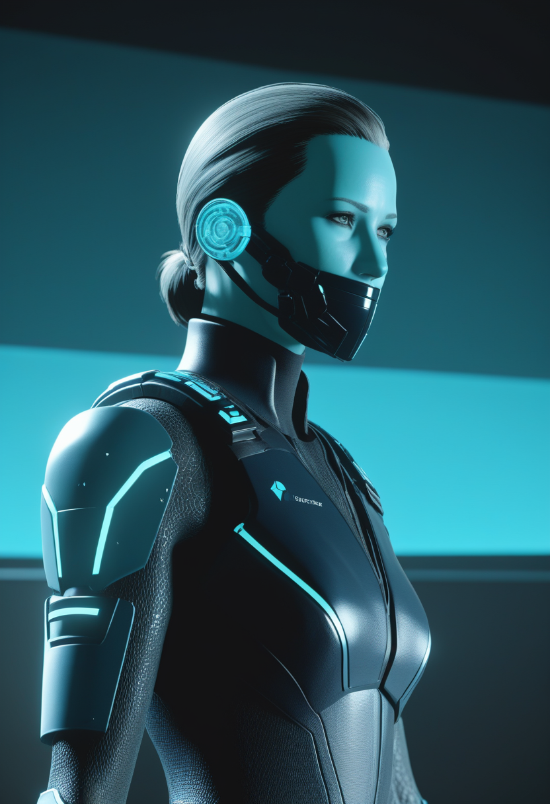
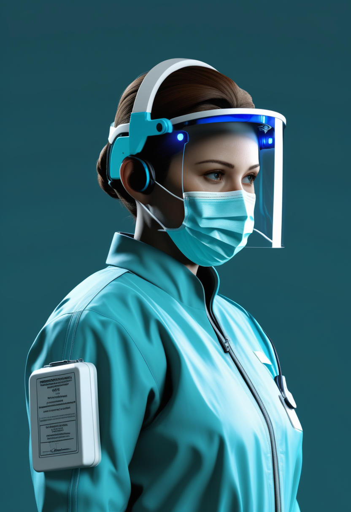
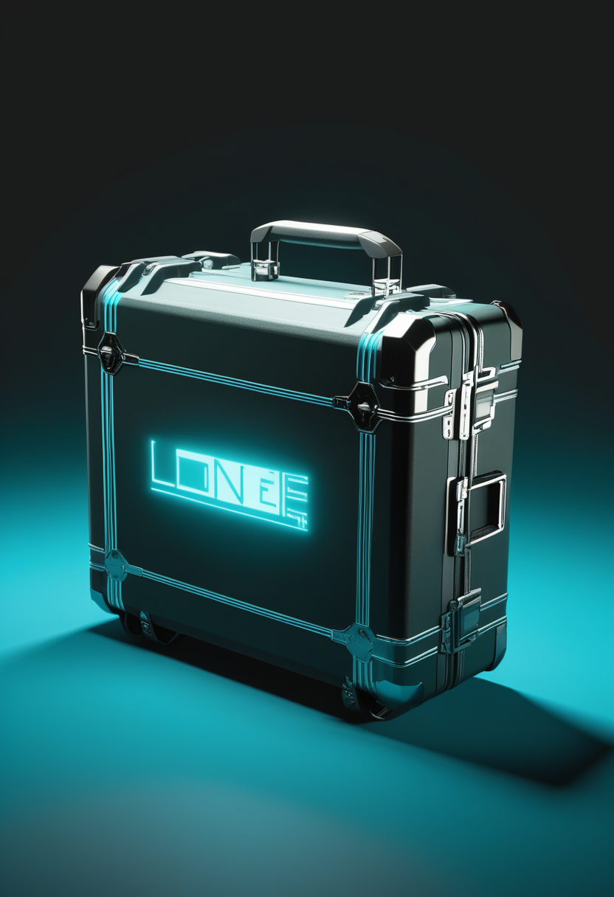
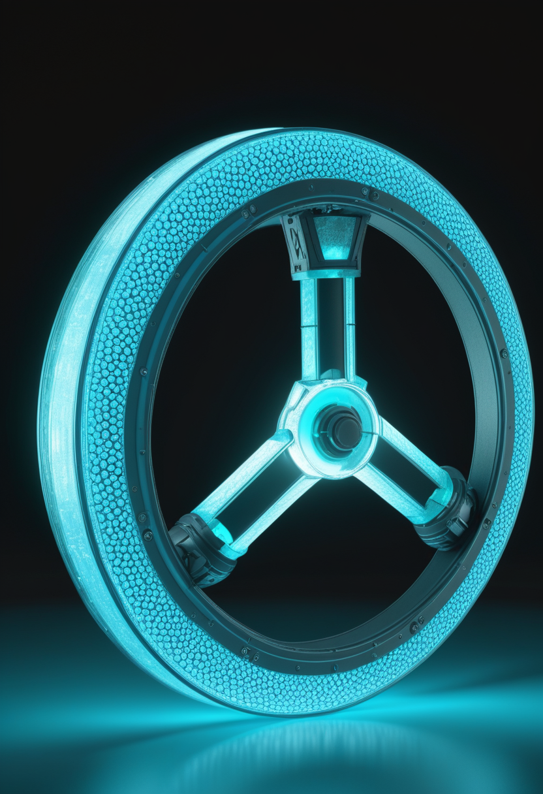
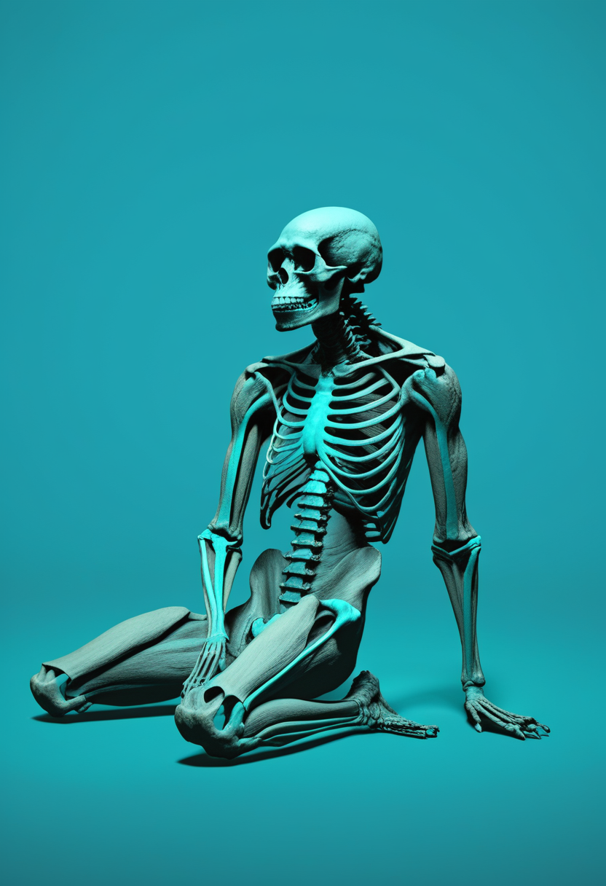

火曜日の便り。コンゴ民主共和国のブンディブギョ型エボラは確定1,926例・死者702例に達し、新たにツショパ州(キサンガニ)とオートウエレ州へ飛び火、専門家は「もはや封じ込められていない」と評価する。一方でAfrica CDCは対応従事者112名の感染・35名の死亡を踏まえ、防護装備と支援体制の強化を各機関へ強く呼びかけた。ウガンダでは2017年以来となるマールブルグ確定例をきっかけに、二重フィロウイルス循環への警戒が続く。BCIの世界ではNeuralinkが完全失明患者への初のヒト移植「Blindsight」を最終段階へ進め、Synchronは対麻痺患者6例全員が安全性評価を達成した先行試験を踏まえピボタル試験の準備を加速する。宇宙・量子の分野ではCERNのLHCが4年越しの大規模改修(LS3)に入り、NASAは老朽Swift望遠鏡の救出ミッションを打ち上げ、IBM・オークリッジ国立研究所・クリーブランドクリニックは量子コンピュータで核融合炉材料の化学計算に初めて成功した。人類史では中国の化石証拠が「進化の袋小路」ではなく複数系統が交錯する東アジアという新たな像を描き出し、AI意識の検出手法整備を求める提言も専門家19名の連名で示された。SMAの世界では日本の新生児スクリーニング実証事業が自治体単位で拡大し、欧州ではノバルティスの遺伝子治療「Itvisma」が2歳以上の患者への承認を得た。

7/12号の続報 ― コンゴ民主共和国(DRC)政府は7月13日、ブンディブギョ型エボラの確定症例が1,926例、死者702例に達したと発表した。新たにツショパ州(州都キサンガニ)で4例(死者2)、南スーダン・中央アフリカ国境のオートウエレ州で1例の死亡が確認され、被災地域は既に5州に及ぶ。調査によれば両州の症例はいずれもイトゥリ州ニアニアからの人の移動で持ち込まれたとみられ、独立した新たな感染チェーンではないというが、WHO高官は新規症例の5分の4が既知感染者と疫学的関連を持たないと明らかにし、実際の流行規模は公式統計の2〜4倍に上る可能性を改めて指摘した。専門家は「もはや封じ込められていない」と評価する一方、7月2日に始まった初の治療薬治験「PARTNERS」(モノクローナル抗体MBP134とレムデシビルを検証)が対応能力と流行拡大の競争に一筋の希望を投じている。
こども家庭庁は2026年5月25日付で、SMA新生児マススクリーニング実証事業の追加採択自治体を通知した。スクリーニングの手引きは2025年12月、関連指針は2026年1月に改訂済みで、実証事業の裾野拡大は公費によるスクリーニング対象化への地ならしとなる。
ノバルティスは7月2日、欧州委員会(EC)がSMN1遺伝子の対立遺伝子変異を持つ2歳以上の5q型SMA患者向けに遺伝子補充療法「Itvisma(オナセムノジーン アベパルボベク)」を承認したと発表した。年齢・体重で用量調整不要な単回投与で、この広い対象年齢層に承認された遺伝子治療は欧州で初めて。登録試験STEERでは52週時点でHFMSEスコアが統計的に有意な2.39点改善した。
Archives of Physical Medicine and Rehabilitation誌(7月8日付)に掲載された研究は、ヌシネルセン(Spinraza)治療を受けるSMA患児34名を対象に定量的筋超音波検査を実施し、筋萎縮や脂肪・結合組織の蓄積が運動機能スコアと相関することを確認した。侵襲を伴わず客観的に筋の状態を追える手法として、治療効果のモニタリングへの応用が期待される。
欧州では遺伝子治療の対象年齢が広がり、日本では早期発見の基盤整備が進む。同時に非侵襲の筋評価という「経過を見守る技術」も一歩前進し、治療と観察の両輪がそれぞれの持ち場で前進している。
FDAの画期的機器指定(2024年9月取得)を経て、Neuralinkは完全失明患者を対象とした視覚インプラント「Blindsight」の初のヒト移植を2026年中に実施する見込みとなった。メガネ搭載カメラの映像を、視覚野に埋め込んだ1,000本超の極細電極スレッドを通じて直接脳へ伝達する構想で、初期の見え方は低解像度・粒状ながら機器と脳の適応で徐々に改善するとされる。

Synchronは2025年11月確保のシリーズD(2億ドル、その後3.08億ドルまで拡大)を原資に、血管内アプローチの植込み型BCI「Stentrode」で2026年に初のピボタル試験(FDA本承認申請を見据えた本試験)の準備を進める。先行のフィージビリティ試験では対麻痺患者6例全員が主要安全性評価項目(重篤な機器関連有害事象なし)を達成しており、次段階への足がかりとなっている。
薄膜型BCI「Layer 7」(2025年4月にFDA 510(k)クリアランス取得済み)を手がけるPrecision Neuroscienceは、Neuralink共同創業者で微細加工神経インプラントの専門家Vanessa Tolosa氏と、元FDA医療機器審査部門長Vivek Pinto氏を研究開発・医療渉外の要職に招いた。競合からの人材獲得は、植込み型BCI業界の商用化競争が人材面でも激しさを増していることを示す。
視覚回復・対麻痺患者の意思疎通・高解像度記録という異なる臨床ターゲットで、複数社が同時に規制の関門を越えつつある。安全性データの蓄積と人材獲得競争は、この分野が「研究」から「産業」へ移行しつつあることを映している。

コンゴ民主共和国(DRC)政府は7月13日、ブンディブギョ型エボラの確定症例が1,926例、死者702例に達したと発表した。交通の要衝キサンガニを擁するツショパ州で4例(死者2)、南スーダン・中央アフリカ国境のオートウエレ州で1例の死亡が新たに確認され、被災地域は5州に拡大。調査では両州の症例はイトゥリ州ニアニアからの人の移動で持ち込まれたとみられている。専門家は既に「もはや封じ込められていない」と評価している。

Africa CDCは7月13日、エボラ対応に当たる医療・支援従事者の保護強化を各機関に呼びかけた。同機関のディレクター・ジェネラル、Jean Kaseya博士は「信頼できる防護装備、強力な感染予防システム、継続的な訓練、心理社会的支援、安全な労働環境は対応に当たる全ての人にとって必須」と述べた。DRCでは流行開始以来、医療従事者112名が感染し35名が死亡している。

6月30日、ウガンダ・チェゲグワ県で1歳5か月の乳児にマールブルグウイルス確定例が判明した(エボラのサーベイランス強化中に発見)。ウガンダ国内での発生確認は2017年以来。接触者に症状発現者は出ていないが、エボラのPHEIC下で致死率の高い2種のフィロウイルスが同一地域圏で同時循環する異例の事態が続いている。
エボラは制御を失いつつある一方、対応従事者を守ろうとする声は着実に上がっている。マールブルグは2017年以来という異例の再来でありながら、これまでのところ監視体制がその芽を摘んでいる。脅威への対処と、対処する人々を守る仕組みの両方が問われる局面が続く。
CERNの大型ハドロン衝突型加速器(LHC)は7月初旬にRun 3の運転を終えて停止し、2030年再稼働予定の高輝度LHC(HL-LHC)へ向けた大規模改修「LS3(第3次長期停止)」に入った。1.2km以上の区間を解体・換装する年単位の工事となる。停止直前には素粒子の崩壊挙動が標準模型からわずかに逸脱する兆候も報告されていた。
NASAとKatalyst Space Technologiesは7月3日、軌道降下が進むニール・ゲーレルズ・スウィフト宇宙望遠鏡を救出するミッション「Swift Boost」を打ち上げた。捕獲衛星LINKがスウィフトに接近・把持し、数か月かけて軌道を引き上げる計画で、9月の観測再開を目指す。

IBM、オークリッジ国立研究所(ORNL)、クリーブランドクリニックの共同チームは7月6日、核融合炉の「増殖ブランケット」に用いられる溶融塩FLiBeの分子構造9通りについて、量子コンピュータによる初の化学計算に成功したと発表した。トリチウム燃料の抽出に関わる複雑な化学は古典計算機だけでは精度良く扱えず、量子中心のワークフローが最も厳格な古典手法に匹敵する結果を示した。
巨大加速器は雌伏の改修期間に入り、老朽望遠鏡は救出という「守り」のミッションで延命を図る。その傍らで量子コンピュータは核融合という次世代エネルギーの実務計算に初めて食い込んだ。規模の異なる三つの挑戦が、それぞれのペースで前進している。
2026年1月、Trends in Cognitive Sciences誌にPatrick Butlin・Robert Long・Yoshua Bengio・Tim Bayneら意識研究者19名による論文が掲載され、AI意識を検出・定義する枠組み整備を急ぐよう提言した。同年、Neuron誌でもHakwan Lau氏らのチームが「現行の科学的手法ではAIに意識があるか信頼性高く判定できない」と指摘しており、技術の進歩に検出・評価の枠組みが追いついていない現状が浮き彫りになっている。

Nature Ecology & Evolution誌に掲載された総説は、中国で発見された化石人類を「ホモ・ユルエンシス」「ホモ・ロンギ」として再分類する新提案を紹介し、約100万年前の雲県2号化石がホモ・サピエンス系統の早期分岐を示唆する可能性も指摘した。従来「進化の袋小路」とみなされがちだった東アジアを、複数のホモ属系統が交錯し適応してきた動的な進化の交差点として描き直す内容。
AIの「心」を測る物差しはまだ手探りの段階にあり、逆に人類自身の「心の系譜」を辿る化石証拠は東アジアという新たな交差点を描き出しつつある。測る技術と測られる対象、双方の理解が少しずつ深まっている。
2026年7月14日、コンゴ民主共和国のエボラは確定1,926例・死者702例まで拡大し、ツショパ・オートウエレの2州への飛び火とともに「もはや封じ込められていない」局面を迎えた。それでもAfrica CDCは対応従事者112名の感染・35名の死亡を踏まえ、彼らを守る声を上げ続けている。ウガンダでは2017年以来のマールブルグ確認という異例の事態にも、監視体制は着実に応じている。宇宙ではCERNが4年越しの改修に入り、NASAは老朽望遠鏡を救い、量子コンピュータは核融合という次世代エネルギーの扉に手をかけた。人類史の分野では、中国の化石が「進化の袋小路」ではなく交差点としての東アジア像を描き直し、AIの「心」を測る手法の模索も続く。欧州では遺伝子治療の対象が広がり、日本では早期発見の基盤が静かに拡大した。制御を失いかけた脅威と、それでも前へ進む知見――両方が今日も同時に存在している。
では、また明日の朝に。 — JaH